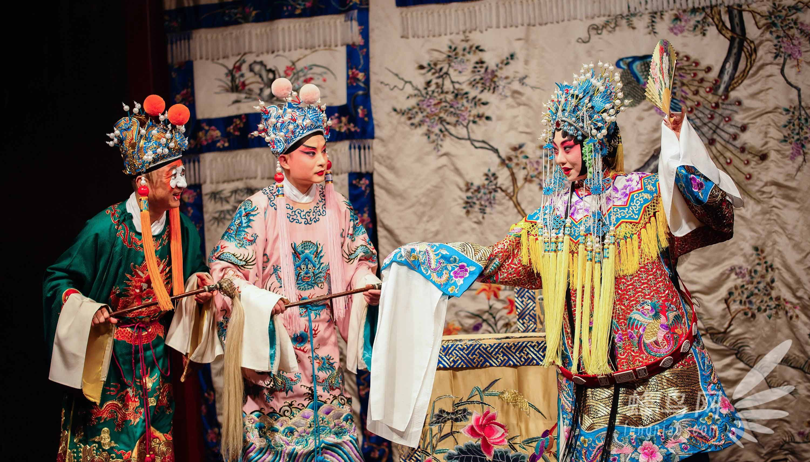

戏曲简介
中国戏曲 Chinese opera，起源于原始社会的歌舞 song-dance，是包含文学 literature、音乐 music、舞蹈 dance、美术 fine arts、杂技 acrobatics 等因素的演出艺术，直到两宋时期才形成比较完整的戏曲艺术形态，包括宋元南戏 Southern Drama of Song and Yuan Dynasties、元杂剧 Yuan opera、明清传奇 Chuanqi of Ming and Qing Dynasties 和近代的京剧 Peking opera、地方戏 local operas。